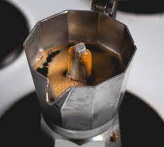
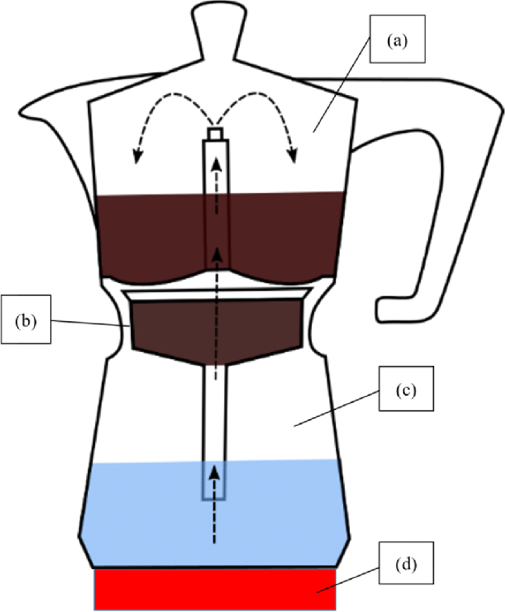

Moka Pot Coffee

The moka pot is an Italian stovetop coffeemaker that produces a brew not unlike an espresso. Steam is forced through the grounds.
Ingredients
- ground coffee (medium-fine grind)
- filtered water
- moka pot
Steps
- fill the basket with ground and level the surface. Do not press down on the coffee grounds as this will hamper the steam's pass-through
- fill water to the valve
- assemble the moka pot and set it on the stove
- take off flame when one hears the gurgling of end-brew process
- pour and serve
Moka Pot Construction
